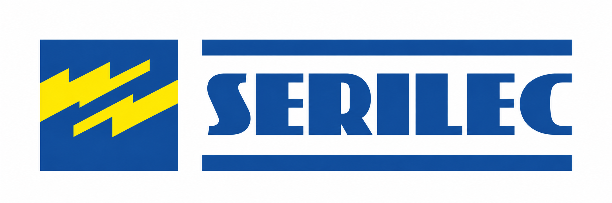
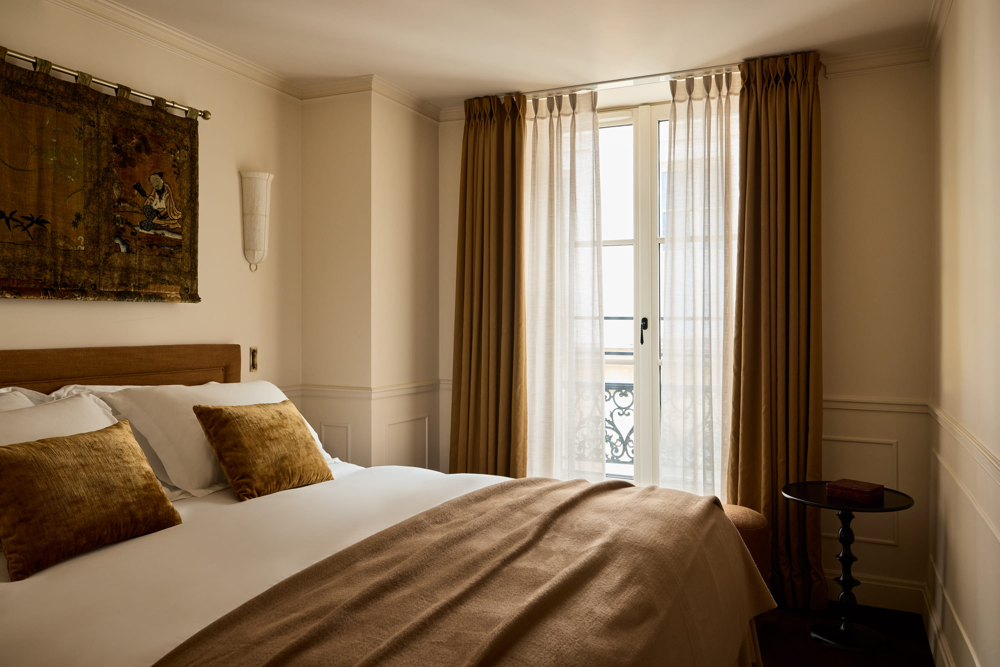

La rentrée est lancée
Retrouvez la dernière actualité SERILEC publiée sur LinkedIn.
Voir la publication LinkedInSuivez les avancées de nos opérations, les temps forts de l’entreprise et les solutions techniques déployées par nos équipes

Retrouvez la dernière actualité SERILEC publiée sur LinkedIn.
Voir la publication LinkedIn
Ronan Perennes revient sur une collaboration construite au fil de plusieurs projets hôteliers accompagnés par SERILEC.
Lire l’article